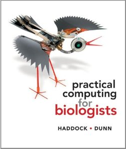

|  | Steven Haddock and Casey Dunn: Practical Computing for Biologists. Sinauer Associates, 2010, 0878933913. |
My copy of Practical Computing for Biologists arrived last week, and I've been very impressed. It is a well-written, well-paced guide to basic computing skills for scientists and engineers of all stripes (not just biologists). Many of the topics will be familiar:
There are also a few that we don't cover, such as interacting with hardware, and some that are covered in more depth than we give them, like image manipulation. The pace is gentler than Software Carpentry, but the last couple of years have convinced me that's a good thing: I think Haddock & Dunn have it right for this target audience. And it's beautifully produced: full-color printing and great graphical design make this book a joy to read. If I ever do turn Software Carpentry into a book, I might skip the topics PCB covers and just tell people to go and buy it.
Recommended.
Originally posted 2011-06-07 by Greg Wilson in Noticed, Opinion.
comments powered by Disqus